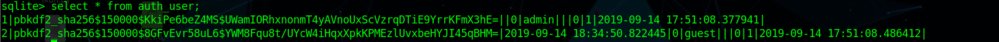
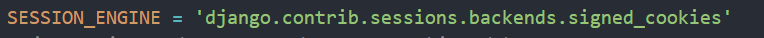
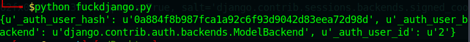
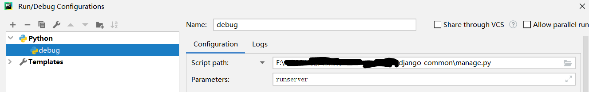
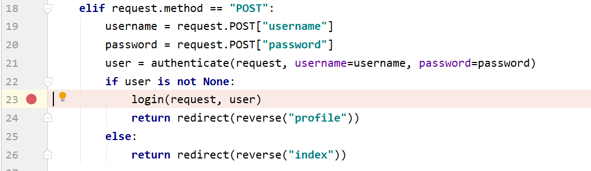
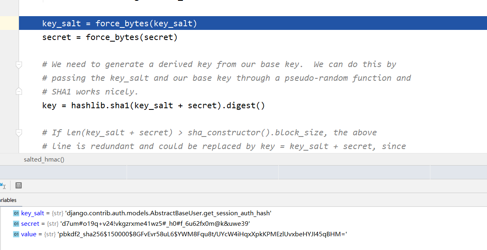
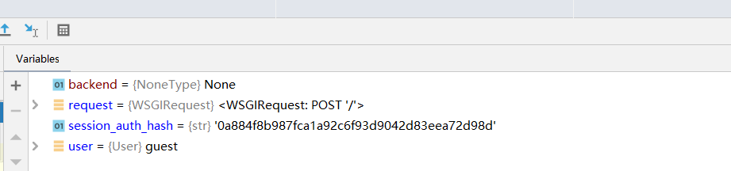
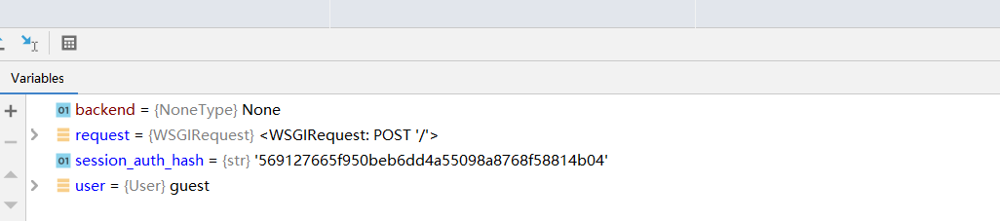
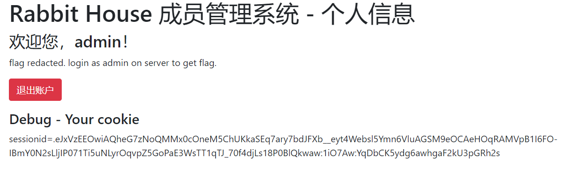

最近做了一下科大的hackergame，有一个django的题很有意思，当时在网上也没怎么搜到相关的利用，就想着把当时的调试过程记录一下
题目源码可以在github上找到：https://github.com/openlug/django-common
复现过程
根据源码可以得到secret_key，还有一个db.sqlite3的数据库文件
先去数据库里随便翻一翻，可以看到有两条password的记录

首先我们需要知道django提供了五种类型的session
- 数据库
- 缓存
- 文件
- 缓存+数据库
- 加密的cookie
然后我们可以看到配置文件中写了

也就是说题目使用了加密的cookie session，通过查阅官方文档（链接在最后）可以知道有secret_key这个sessionid对应的值是可以解开的（需要带salt）
代码
1 | import os |

可以看到一共三个值，_auth_user_backend和_auth_user_id都很容易理解，当时困扰我的是_auth_user_hash是如何生成的，于是想到下个断点去调试一下（pycharm需要先设置一下config）

在view.py的login处下断点

调试，输入guest guest之后f7单步步入，可以看到引入了guest加密后的password

然后再跟踪，可以知道只需要这个值我们就可以生成_auth_user_hash

所以我们只需要将之前从数据库得到的password去替换一下，就可以生成admin的_auth_user_hash了，替换后结果如下

尝试利用一下
1 | import os |
成功伪造成管理员

之前经常出现的是flask的session伪造，和djiango有关的大多是那个反序列化的rce，但是django的客户端session伪造还是第一次见，在这里详细记录一下，当然还有一种利用路由直接带出session的操作，具体参考官方wp了